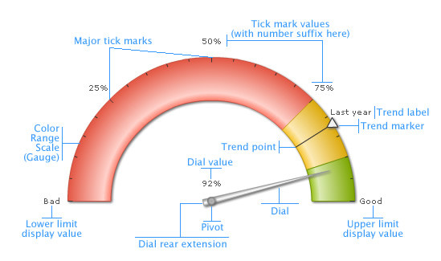

| Elements of the gauge |
An angular gauge chart consists of the following elements:
Here we’ll see each of them in detail. Let’s first have a look at a standard angular gauge chart enlisting the various basic components: |
|  |
|
The angular chart displays the data values on a radial scale. The radial scale is marked by a lower limit and an upper limit, i.e. the minimum and maximum values that can be plotted on the chart. Within that scale, you can create various sections to classify your data - each section can have a different background color, border color etc. to differentiate them from one another. These sections are called color ranges. In the above chart, we have 3 color ranges marked as green, yellow and red. There can be any number of color ranges. For each color range, you’ll have to specify the minimum and maximum values and the hex color code for the range.
Note: Each color range should have its own unique range value. That is say, if a range is defined as 0-50, the next range should have the minimum value as 50 necessarily. It cannot have anything other than this. Similarly, if the upper limit of the chart is 100, the last range should have max value as 100. In an angular gauge, dials are used to point to the desired value. You can point to more than one value using multiple dials. Each dial can have its individual properties like color (border and background), width (both base and top), radius and value of the dial. Tick marks are the calibration marks on the radial scale to help interpret the reading. There are two types of tick marks which can be drawn on the chart:
For all the tick marks, you can specify the color, height and thickness. You can also specify the number of tick marks that you want to have on the chart. You have the option to show/hide the tick mark values as well. For each dial on the chart, FusionWidgets allows you to set a tooltip to display the value indicated by that particular dial. You can customize the tooltip background color and border color. You can also opt to show/hide it.Trend Points / Trend arcs / Trend markers The angular gauge chart allows you to define trend points on the chart. For example, if you wish to highlight a certain value (say like last year’s average), you could use the trend point feature to do so. Annotations allow you to draw your own custom shapes, text, or load images on the chart.Now that you know the potential of the angular chart, let's go ahead and build a sample angular gauge. |